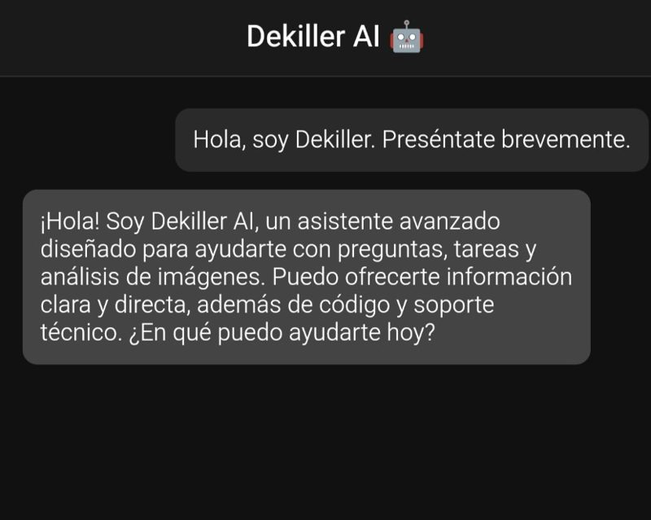

IA · PROYECTO PRINCIPAL
Dekiller AI Core
Mi asistente de IA personal: un chat web con servidor propio en Node.js y Express, pensado para usarse desde Android. Es la base a la que quiero conectar mis otras herramientas.
Ya funciona: chat con memoria de la conversación reciente, envío de imágenes para que la IA las analice, búsqueda de imágenes de Pinterest y comandos para abrir apps de Android. Por ahora usa un solo modelo (GPT-4o mini vía OpenRouter); conectarlo con Coder, Companion y Colab Manager está por hacer.
Node.jsExpressOpenRouterAndroid
En desarrollo